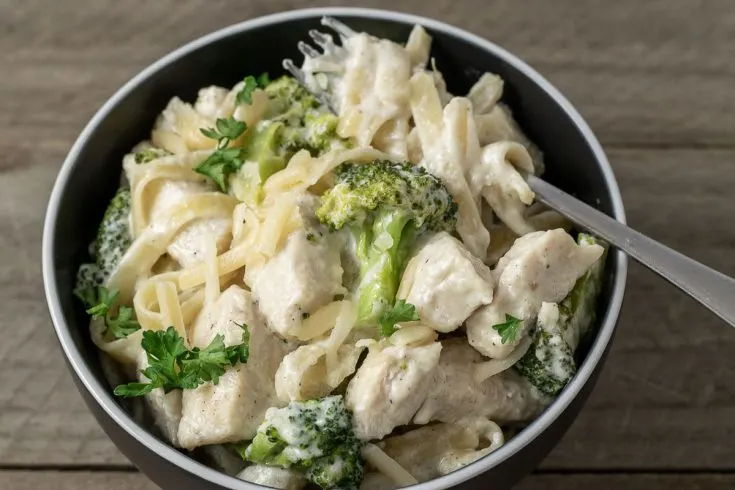

Chicken Alfredo Pasta

An absolute classic! This simple recipe will make a delicious creamy alfredo pasta with
chicken and broccoli
Ingredients
- 8 ounces fettuccine or spaghetti, uncooked
- 2 cups fresh broccoli florets
- ¼ cup KRAFT Zesty Italian Dressing
- 1 pound boneless skinless chicken breasts, cut into bite-sized pieces
- 1 ⅔ cups milk
- 4 ounces PHILADELPHIA Cream Cheese, cubed
- ¼ cup KRAFT Grated Parmesan Cheese
- ½ teaspoon dried basil leaves
Directions
- Cook pasta as directed on package, adding broccoli to the boiling
water for the last 2 min. of pasta cooking time. Drain pasta mixture.
- Meanwhile, heat dressing in large nonstick skillet on medium-high heat. Add chicken; cook
for 5 min. or until chicken is cooked through, stirring occasionally. Stir in milk, cream cheese, Parmesan
cheese and basil. Bring to a boil, stirring constantly. Cook 1 to 2 min. or until sauce
is well blended and heated through.
- Add chicken mixture to pasta mixture; mix lightly.